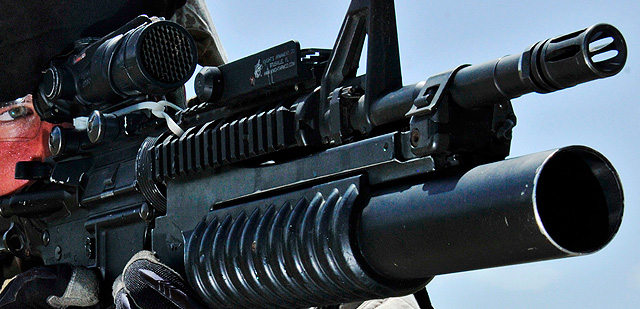
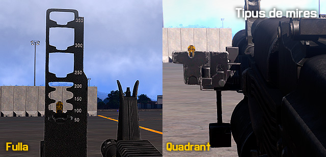

Llançagranades de 40mm M203
Fabricat per Colt, el llançagranades M203 és una arma lleugera, d’un sol tret, carregada per recambra, amb mecanisme d'auto-amartellament, dissenyada específicament per acoblar-se al M16 i M4 amb sistema de rails i al M4 en la seva versió M203A1, tot i que s’adapta a d’altres armes i és emprat per gran varietat de forces armades.
Té una llargada de canó de 12’’ per M16 i M4, tot i que existeix una versió 9’’ (SOPMOD) per M4 que ja no es produeix, emprada per les forces especials. Disposa de gallet propi, fiador i fixació al canó.

-
-
Arma
- Longitud: 30,5 cm
- Pes: 1,4 kg
-
-
-
Projectil
-
Calibre: 40 mm
-
Pes: 227 grams
-
Velocitat de sortida: 122 Km/s (250 fps)
-
Pressió de cambra: 206,325 quilo-pascals (35,000 psi)
-
-
Rang mínim de seguretat (HE)
- Entrenament: 130 metres
- Combat: 31 metres
-
-
Rang mínim d'armat: Entre 14 i 38 metres
-
Rang màxim: 400 metres
-
-
Rang màxim efectiu
- Objectiu tipus equip de foc: 350 metres
- Foc puntual de l'arma o vehicle: 150 metres
-
-
Cadència de foc: 5 a 7 projectils per minut
-
Carrega mínima de combat: 36 projectils HE
-
-
Tipus de mires
Pot fer-se servir amb dos tipus de mira, la de fulla i la quadrant.
- Mira de fulla: Es tracta d’una mira de ferro abatible regulada a intervals de 50m que s’apunta amb la mira del fusell. És la que faràs servir de forma més habitual. Disposa de tres marques. La vermella ajustada a 50m per recordar al granader que no ha de fer-se servir aquest rang per ajustar l’arma i a 100 i 200 metres en blanc que és on s’emprarà per defecte. Pots ajustar la distància amb les tecles .
- Mira quadrant: És una mira metàl·lica acoblada al lateral de l’arma que s’ajusta independentment. En el simulador disposes d’una mira similar a les armes per defecte que consisteix en una mira hologràfica de punt vermell al costat del llançador acoblat. Pots ajustar la distància amb les tecles .

Munició
El llançagranades M203 pot disparar diferents tipus de munició:
- High Explosive Dual Purpose. La HDEP pot penetrar 5cm de blindatge d’acer a 150m i pot matar a 5m amb un rang de 130m de dany.
- High Explosive. La HE crea una explosió que pot matar a 5m amb un rang de 130m de dany.
- Star Parachute: Una bengala amb paracaigudes per il·luminació i senyals. Dura uns 40 segons (20-25 al simulador).
- White Star Cluster: Bengala per il·luminació i senyals. La ogiva de plàstic té cinc punts units en relleu per a la identificació de nit. Dura 7 segons.
- Ground Marker Round: Granada de fum per marcar la posició o identificació aèria, i per ocultar el moviment. S'arma entre els 15 i els 45 metres.
- Practice roud: Projectil de pràctica. Radi de perill de 20m.
- CS Round: Projectil multiús, pensat per control de masses i entorns MOUT. Genera un núvol de gas CS d’efecte lacrimogen.
- Buckshot Round: Projectil multiús, especial per vegetació densa i neteja d’habitacions. Genera un con de 30x30m amb 2000 perdigons.
Operació
Funcionament
La M203 fa servir un sistema d'alta-baixa propulsió per disparar un projectil de 40mm. Quan el martell colpeja el percutor es genera la combustió del propel·lent provocant una pressió de 35000 psi a la cambra que trenca la subjecció de llautó de la càrrega de pólvora baixant la pressió a 3000 psi i empenyent el projectil a una velocitat de 250 fps. La granada gira a 37000 rpm cap a la dreta fet que l’estabilitza en vol i dóna suficient força rotacional per armar l'espoleta. La importància de conèixer aquest mecanisme rau en que aquesta és la causa per la qual l’arma no explota per sota de 14-27/38m com a mecanisme de seguretat.
Càrrega
Per defecte surts amb la M203 descarregada. Si vols carregar l'arma, pots prémer la tecla R que carregarà una granada de tipus explosiu si en tens, o bé pots seleccionar el tipus de granada que vols al menú d'acció.
Rangs
- El rang màxim de l’arma és de 400m.
- El rang efectiu per objectius tipus equips de foc és de 350m i per objectius tipus vehicle o foc puntual de l'arma és de 150m.
- L’àrea letal és de \<5m per objectius tous. Provoca danys en un àrea de 130-140m.
- Durant el vol necessita un temps mínim per armar-se que suposa 14-38m (27m en les HE i HEDP), per sota del qual no detonarà el projectil.
Punteria bàsica
Tres fonaments de la punteria
Els tres fonaments de la punteria amb M203 són posició estable, apuntat i respiració.
Posició estable
A l’hora de disparar la M203, has de cercar la postura més estable possible. Les postures més baixes ofereixen la millor estabilitat. A més sempre que sigui possible hauràs de recolzar l'arma per millorar encara més l'estabilitat.
Apuntat
Has d'alinear la mira perquè la punta del pal vertical estigui al centre de la massa de l'objectiu. Segons la qualitat del modelat de l'arma al simulador, et pots trobar que l'apuntat pot necessitar de fer-se amb alguna altra part.
Respiració
És recomanable mantenir la respiració. A la pròpia imprecisió de l’arma si hi afegeixes el balanceig propi del soldat, pots crear grans desviacions que et facin ineficaç, especialment a grans distàncies.
Disparar, observar i ajustar
Aquesta acció l’ha de fer el mateix granader o si és possible, un observador que li indiqui la desviació i correcció a aplicar, el treball en equip multiplica la velocitat.
Tècniques avançades de punteria
Les tècniques avançades de punteria reforcen la punteria bàsica i t'ensenyen com i quan utilitzar aquests conceptes bàsics en situacions de combat.
Característiques del foc
- Trajectòria. És la corba que segueix el projectil fins a l’objectiu. La trajectòria puja tant com s'eleva la mira.
- Línia de visió. És la línia imaginaria entre l’arma i l’objectiu.
- Ordenada. És la distància vertical a qualsevol punt entre la trajectòria i la línia de visió
- Màxima ordenada. És la màxima distància vertical entre la trajectòria i la línia de visió. Es troba al punt més alt de la trajectòria.
- Zona de perill. És l'àrea al voltant del lloc d’impacte on es fereix o destrueix l’objectiu.
- Zona morta. És l'àrea en que el personal o els objectius es troben a segurs del foc directe de les armes. Rases, depressions i barrancs són exemples de zones mortes.
Classes de foc
La distribució foc es classifica de tres maneres, respecte del terreny, l'objectiu i l'arma.
Respecte del terreny
Pel llançagranades M203, aquesta classe de foc es refereix només al foc picat. El foc picat també es produeix en disparar a llargues distàncies, des de terreny elevat a terreny més baix, cap a una elevació abrupta del terreny, o a través de terrenys irregulars, el que resulta en una pèrdua de foc d'abrasió en qualsevol punt al llarg de la trajectòria.
Respecte de l’objectiu
- El foc Enfilat és un foc que coincideix amb el llarg de l'eix de l'objectiu.
- El foc de Flanc és impactar l'objectiu des d'un costat.
- El foc Oblic és impactar l'objectiu des de l'angle.
- El foc Frontal és impactar l'objectiu des del front.
Respecte de l’arma
- Foc puntual. Es distribueix el foc cap a l’objectiu, amb un sol apuntat.
- Foc ràpid a dreta o esquerra. Es distribueix el foc cap a la dreta o l’esquerra sense canviar la distància de tir. Emprar-lo contra objectius frontals o de flanc.
- Foc ràpid de cerca. Foc en profunditat cap a un objectiu on canviem l’elevació sense canviar la direcció. Emprar-lo contra objectius enfilats.
- Foc ràpid a dreta o esquerra i cerca. Es distribueix el foc contra objectius amb profunditat i amplada canviant elevació i direcció. S’empra contra objectius oblics.
Mètodes de control de foc
El granader actua com a fuseller mentre no rep cap indicació del seu líder. Recorda que el llançagranades és una eina tàctica, no un arma qualsevol.
-
Ordre inicial de foc. El líder del granader l'activa amb l'ordre inicial de foc.
1) Alerta. Advertir el granader que està a punt de rebre instruccions fent servir GRANADER o GRANADER UN/DOS si n'hi hagués més d'un.
2) Direcció. El líder ha de fer servir un o més del mètodes següents per indicar la direcció general de l'objectiu:
> - **Parlant.** El líder informa d'on és l'objectiu respecte del granader. > - **Apuntant.** El líder apunta l'objectiu amb el seu braç o la seva arma cap a l'objectiu. > - **Disparant traçadores.** El líder pot disparar munició traçadora per indicar la posició de l'objectiu. S'ha de tenir present que el foc amb traçadores pot alertar a l'enemic de la nostra presència i posició, perdent l'element sorpresa. > - **Fent servir punts de referència.** El líder fa servir un punt de referència fàcilment reconeixible del terreny per indicar la posició de l'objectiu.3) Distància. El líder calcula la distància, i l'anuncia arrodonint (141 és incorrecte, digues 150). No cal dir metres.
4) Descripció. A no ser que l'objectiu sigui obvi, el líder ha de descriure l'objectiu ràpidament.
5) Mètode de foc. El líder anuncia el mètode de foc respecte de l'arma a fer servir i a no ser que es requereixi de foc ràpid, el líder indica la quantitat de projectils a disparar.
6) Ordre per obrir foc. El líder indica l'ordre per començar a disparar amb A LA MEVA ORDRE o AL MEU SENYAL. Després que els granaders informin que estan LLESTOS, el líder ordena foc a la seva discreció. Si el líder vol fer foc immediatament, simplement ordre FOC sense fer pausa.
-
Ordres de foc posterior. Un líder fa servir les ordres de foc posterior per corregir el tret del granader. Per corregir la desviació lateral dirà per exemple DRETA 100 o ESQUERRA 50. I per corregir la distància dirà AUGMENTA CINC ZERO o DISMINUEIX CINC ZERO.
Aplicació del foc
L'aplicació de foc es refereix als mètodes del granader que pot utilitzar per cobrir per complet i de manera efectiva una àrea objectiu.
-
Supressió. El granader aplica foc de supressió sobre l'objectiu per evitar que l'enemic pugui veure, disparar o seguir objectius. Es pot fer mitjançant foc directe cap a l’objectiu o foc indirecte dirigit prou a prop de l’enemic.
-
Foc de vigilància. Es tracta d’un tipus de foc que pretén ocultar el moviment dels altres soldats. En aquesta situació el granader està realitzant quatre tasques:
1) Suport a l'escamot cobrint els espais morts. 2) Observes la ruta i plans de l’escamot. 3) Selecciones i observen posicions enemigues contínuament. 4) Determines on obtenir les millors posicions de llançagranades.
-
Foc d’àrea i puntual. El granader ha de tenir en compte el punt d’apuntat i la direcció. El punt d’apuntat inicial se situarà al centre de l’objectiu i si es pot, tant prop com es pugui del líder o les comunicacions enemigues. Cal cercar aquells punts que maximitzin el radi d’efecte. Segons els punts d’impacte, el granader corregirà els següents trets.
-
Visibilitat limitada. La visibilitat limitada degrada l'eficàcia del foc, degut a que el granader no pot detectar i identificar objectius i el líder no pot controlar el foc de forma efectiva. L’us per part del líder de traçadores pot ser emprat per corregir aquesta situació.
-
Foc superposat. És un tipus de foc en el que el granader dispara amb una trajectòria per sobre de tropes amigues només quan el líder ho ordeni així específicament. Mai es realitzarà aquest tipus de foc a través d’arbres, ja que l’impacte accidental de la munició a partir dels 14 metres pot detonar-la i produir danys.